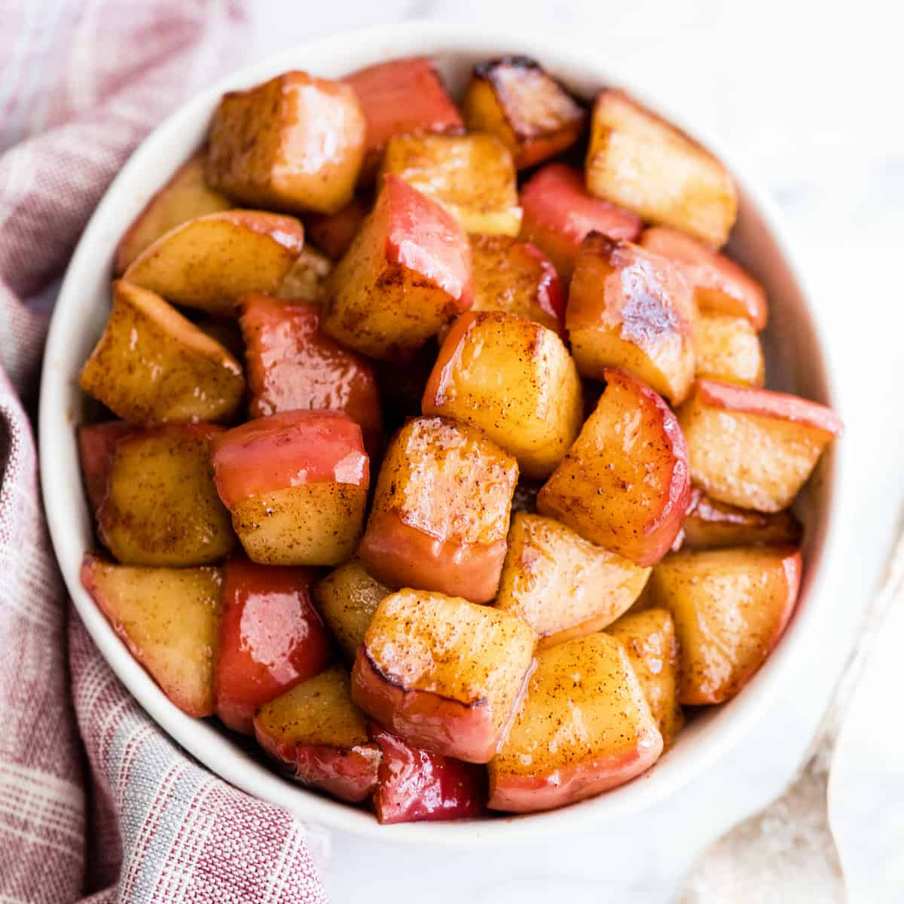

Cinnamon Apples

Description
I can describe my favorite thing about fall in two simple words – Apple Season! If you find yourself with an abundance of delicious fall apples, you need to make these Cinnamon Apples! Not only are they easy to make in minutes, but they’re healthy and delicious!
Ingredients
- 3 apples (about 3 cups, chopped)
- 2 Tablespoons water
- 1 Tablespoon salted butter (or coconut oil)
- 1 Tablespoon maple syrup
- ½ teaspoon ground cinnamon
- ⅛ teaspoon fine sea salt
- ¼ teaspoon pure vanilla extract
Steps
- Cut apples into same-sized pieces (about ½-1” cubes).
- Put apples pieces into a skillet with 2 TBS water. Cover the pan and cook over medium heat for about 5 minutes, stirring occasionally, until the apples become slightly soft and water is absorbed.
- Add 1 TBS of butter to the skillet. Stir apples and oil together until all the apples are coated. Cook for 5 minutes, stirring every minute or so, until the apples become soft (you may need to cover them for the last 2 minutes).
- Add Maple syrup, cinnamon, salt and vanilla. Stir until well mixed.
- Cook for about 5 more minutes, stirring every minute until the apples reach your desired softness.
- Remove from heat and serve.